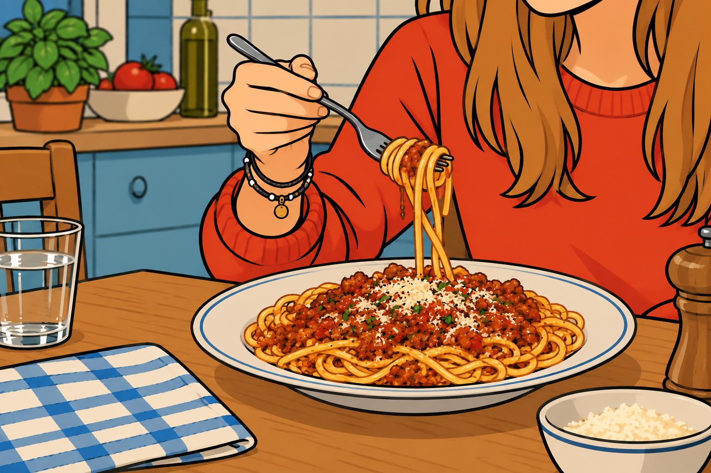

Ingredients
Ingredients
This is one of those dishes that is incredibly easy to make and yet feels a little spectacular. It’s the kind of meal that can make a great impression on a date, even though it takes very little effort.
I learned how to make it when I was an exchange student in Italy. One of the things that surprised me most was how many of my Italian friends—men and women alike—were perfectly comfortable cooking for themselves and others. It was quite different from what I was used to back home in Poland.
The Italian dishes I like most are uncomplicated yet delicious. A few simple, good-quality ingredients can create something genuinely special. It’s easy to see why Italian cuisine has conquered the world.
IngredientsStepsPatience is important here. Don't rush cooking the tomatoes; the result will be worth the waiting.